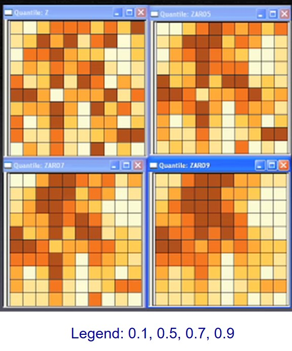
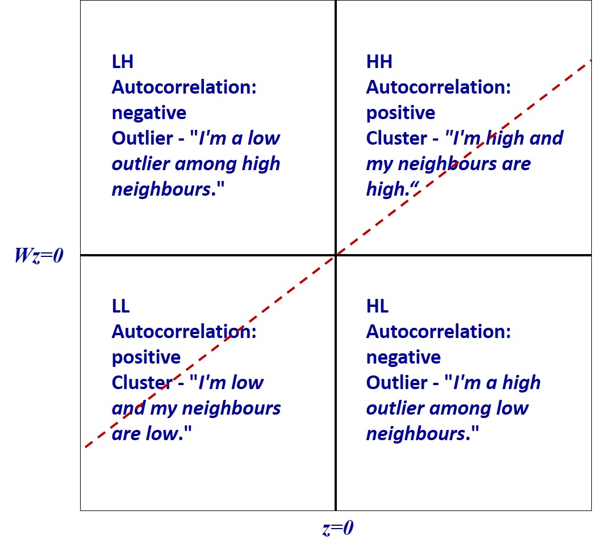

Lesson 5: Global and Local Measures of Spatial Association
Content
- What is Spatial Autocorrelation
- Measures of Global Spatial Autocorrelation
- Measures of Global High/Low Clustering
- Introducing Localised Geospatial Analysis
- Local Indicators of Spatial Association (LISA)
- Cluster and Outlier Analysis
- Local Moran and Local Geary
- Moran scatterplot
- LISA Cluster Map
- Hot Spot and Cold Spot Areas Analysis
- Getis and Ord’s G-statistics
- Emerging Hot Spot Analysis (EHSA)
- Spacetime and spacetime cubes
- Mann-Kendall Test
- EHSA map
What is Spatial Autocorrelation
- Toble’s First Law of Geography
- Spatial Dependency
- Spatial Autocorrelation
- Positive autocorrelation
- Negative autocorrelation
Tobler’s First law of Geography
Everything is related to everything else,
but near things are more related than distant things.
The foundation of the fundamental concepts of:
spatial dependence, and
spatial autocorrelation

Spatial Dependency
Spatial dependence is the spatial relationship of variable values (for themes defined over space, such as rainfall) or locations (for themes defined as objects, such as cities).
Spatial dependence is measured as the existence of statistical dependence in a collection of random variables, each of which is associated with a different geographical location.

Spatial Autocorrelation
Spatial autocorrelation is the term used to describe the presence of systematic spatial variation in a variable.
The variable can assume values either:
- at any point on a continuous surface (such as land use type or annual precipitation levels in a region);
- at a set of fixed sites located within a region (such as prices at a set of retail outlets); or
- across a set of areas that subdivide a region (such as the count or proportion of households with two or more cars in a set of Census tracts that divide an urban region).

Positive Spatial Autocorrelation
- Clustering
- like values tend to be in similar locations.
- Neighbours are similar
- more alike than they would be under spatial randomness.
- Compatible with diffusion
- but not necessary caused by diffusion.

Negative Spatial Autocorrelation
- Checkerboard patterns
- “opposite” of clustering
- Neighbours are dissimilar
- more dissimilar than they would be under spatial randomness
- Compatible to competition
- but not necessary competition

Measures of Global Spatial Autocorrelation
- Moran’s I
- Geary’s c
Measures of Global Spatial Autocorrelation: Moran’s I
Describe how features differ from the values in the study area as a whole.

- Moran I (Z value) is:
- positive (I>0): Clustered, observations tend to be similar;
- negative(I<0): Dispersed, observations tend to be dissimilar;
- approximately zero: observations are arranged randomly over space.
Measures of Global Spatial Autocorrelation: Geary’s c
Describing how features differ from their immediate neighbours.

- Geary c (Z value) is:
- Large c value (>1) : Dispersed, observations tend to be dissimilar;
- Small c value (<1) : Clustered, observations tend to be similar;
- c = 1: observations are arranged randomly over space.
Relationship of Moran’s I and Geary’s C
C approaches 0 and I approaches 1 when similar values are clustered.
C approaches 3 and I approaches -1 when dissimilar values tend to cluster.
High values of C measures correspond to low values of I.
So the two measures are inversely related.
z-score and p-value explained
Statistically, we select the confident interval such as 95% => alpha value = 0.05.
Reject the Null hypothesis (H0) if p-value is smaller than alpha value.
Failed to reject the Null Hypothesis (H0) if p-value is greater than alpha value.

Reference: Confidence Interval or P-Value?
Spatial Randomness
The Null Hypothesis:
Observed spatial pattern of values is equally likely as any other spatial pattern.
Values at one location do not depend on values at other (neighbouring) locations.
Under spatial randomness, the location of values may be altered without affecting the information content of the data.
What if my data violate the assumptions?
- If you doubt that the assumptions of Moran’s I are true (normality and randomization), we can use a Monte Carlo simulation.
Simulate Moran’s I n times under the assumption of no spatial pattern,
Assigning all regions the mean value
Calculate Moran’s I,
- Compare actual value of Moran’s I to randomly simulated distribution to obtain p-value (pseudo significance).
Measures of Global High/Low Clustering: Getis-Ord Global G
- Getis-Ord Global G statistic is concerned with the overall concentration or lack of concentration in all pairs that are neighbours given the definition of neighbouring areas.
- The variable must contain only positive values to be used.

Source: Getis, A., & Ord, K. (1992). “The Analysis of Spatial Association by Use of Distance Statistics”. Geographical Analysis, 24, 189–206.
Interpretation of Getis-Ord Global G
- The p-value is not statistically significant.
- You cannot reject the null hypothesis. It is possible that the spatial distribution of feature attribute values is the result of random spatial processes. Said another way, the observed spatial pattern of values could be one of many possible versions of complete spatial randomness.
- The p-value is statistically significant, and the z-score is positive.
- You can reject the null hypothesis. The spatial distribution of high values in the dataset is more spatially clustered than would be expected if underlying spatial processes were truly random.
- The p-value is statistically significant, and the z-score is negative.
- You can reject the null hypothesis. The spatial distribution of low values in the dataset is more spatially clustered than would be expected if underlying spatial processes were truly random.
Local Spatial Autocorrelation Statistics
A collection of geospatial statistical analysis methods for analysing the location related tendency (clusters or outliers) in the attributes of geographically referenced data (points or areas).
Can be indecies decomposited from their global measures such as local Moran’s I, local Geary’s c, and Getis-Ord Gi*.
These spatial statistics are well suited for:
- detecting clusters or outliers;
- identifying hot spot or cold spot areas;
- assessing the assumptions of stationarity; and
- identifying distances beyond which no discernible association obtains.
Local Indicator of Spatial Association (LISA)
A subset of localised geospatial statistics methods.
Any spatial statistics that satisfies the following two requirements (Anselin, L. 1995):
the LISA for each observation gives an indication of the extent of significant spatial clustering of similar values around that observation;
the sum of LISAs for all observations is proportional to a global indicator of spatial association.
Detecting Spatial Clusters and Outliers
Given a set of geospatial features (i.e. points or polygons) and an analysis field, the spatial statistics identify spatial clusters of features with high or low values. The tool also identifies spatial outliers.
local Moran’s I is the most popular spatial statistical method used, other methods include local Geary’s c.
In general, the analysis will calculate a local statistic value, a z-score, a pseudo p-value, and a code representing the cluster type for each statistically significant feature. The z-scores and pseudo p-values represent the statistical significance of the computed index values.

Local Moran’s I
Given a geographically referenced attribute field, X the formula of local Moran’s I is:

Local Moran’s I and Moran’s I
The summation of local Moran is

- Moran’s I

Test statistics of Local Moran

Interpretation of Local Moran
An outlier: significant and negative if location i is associated with relatively low values in surrounding locations.
A cluster: significant and positive if location i is associated with relatively high values of the surrounding locations.
In either instance, the p-value for the feature must be small enough for the cluster or outlier to be considered statistically significant.
The commonly used alpha-values are 0.1, 0.05, 0.01, 0.001 corresponding the 90%, 95, 99% and 99.9% confidence intervals respectively.
Interpretation of Local Moran and Scatterplot

Other forms of LISA
- Local Geary


Detecting hot and cold spot areas
- Given a set of geospatial features (i.e. points or polygons) and an analysis field, the spatial statistics tell you where features with either high (i.e. hot spots) or low values (cold spots) cluster spatially.
- The spatial statistic used is called Getis-Ord Gi* statistic (pronounced G-i-star).
- Getis and Ord (1992) define the local G and G∗ statistics for region i (i=1,···,n) as:

Getis-Ord Gi*
For variable x to be nonpositive and the weight matrix W(d) to be nonbinary the G and G* statistics are defined as:

Interpretation of Getis-Ord Gi and Gi*
A hot spot area: significant and positive if location i is associated with relatively high values of the surrounding locations.
A cold spot area: significant and negative if location i is associated with relatively low values in surrounding locations.
Fixed weighting scheme
Things to consider if fixed distance is used: - All features should have at least one neighbour.
No feature should have all other features as neighbours.
Especially if the values for the input field are skewed, you want features to have about eight neighbors each.
Might produce large estimate variances where data are sparse, while mask subtle local variations where data are dense.
In extreme condition, fixed schemes might not be able to calibrate in local areas where data are too sparse to satisfy the calibration requirements (observations must be more than parameters).

Adaptive weighting schemes
Adaptive schemes adjust itself according to the density of data
Shorter bandwidths where data are dense and longer where sparse.
Finding nearest neighbors are one of the often used approaches.
 ]
]
Best practice guidelines
Results are only reliable if the input feature class contains at least 30 features.
The input field mst be in continuous data type such as a count, rate, or other numeric measurement, no categorical attribute field is allowed.
Select an appropriate spatial weighting method
- The polygon contiguity method is effective when polygons are similar in size and distribution, and when spatial relationships are a function of polygon proximity (the idea that if two polygons share a boundary, spatial interaction between them increases).
- When you select a polygon contiguity conceptualization, you will almost always want to select row standardization for tools that have the Row Standardization parameter.
- The fixed distance method works well for point data. It is often a good option for polygon data when there is a large variation in polygon size (very large polygons at the edge of the study area and very small polygons at the center of the study area, for example), and you want to ensure a consistent scale of analysis.]
Select an appropriate spatial weighting method
- The inverse distance method is most appropriate with continuous data or to model processes where the closer two features are in space, the more likely they are to interact/influence each other.
- Be warned that with this method, every feature is potentially a neighbour of every other feature, and with large datasets, the number of computations involved will be enormous.
Select an appropriate spatial weighting method
- The k-nearest neighbours method is effective when you want to ensure you have a minimum number of neighbors for your analysis.
Especially when the values associated with your features are skewed (are not normally distributed), it is important that each feature is evaluated within the context of at least eight or so neighbors (this is a rule of thumb only).
When the distribution of your data varies across your study area so that some features are far away from all other features, this method works well.
Note, however, that the spatial context of your analysis changes depending on variations in the sparsity/density of your features.
When fixing the scale of analysis is less important than fixing the number of neighbors, the k-nearest neighbours method is appropriate.
Futher guide on selecting a fixed-distance band value
Select a distance based on what you know about the geographic extent of the spatial processes promoting clustering for the phenomena you are studying.
Use a distance band that is large enough to ensure all features will have at least one neighbor, or results will not be valid.
Try not to get stuck on the idea that there is only one correct distance band. Reality is never that simple. Most likely, there are multiple/interacting spatial processes promoting observed clustering.
Select an appropriate distance band or threshold distance.
- All features should have at least one neighbour.
- No feature should have all other features as a neighbour.
- Especially if the values for the input field are skewed, each feature should have about eight neighbours.
Emerging Hot Spot Analysis (EHSA)
A technique that falls under exploratory spatial data analysis (ESDA).
It combines the traditional ESDA technique of hot spot analysis using the Getis-Ord Gi* statistic with the traditional time-series Mann-Kendall test for monotonic trends.
The goal of EHSA is to evaluate how hot and cold spots are changing over time. It helps us answer the questions: are they becoming increasingly hotter, are they cooling down, or are they staying the same?
Mann-Kendall test for trend overview
The Mann-Kendall statistical test for trend is used to assess whether a set of data values is increasing over time or decreasing over time, and whether the trend in either direction is statistically significant.
It is a non-parametric test, which means it works for all distributions (i.e. your data doesn’t have to meet the assumption of normality), but your data should have no serial correlation. If your data does follow a normal distribution, you can run simple linear regression instead.
Refer to this article for a full tutorial of how to perform Mann-Kendall test manually.
The Hypothesis
Null hypothesis: There is no monotonic trend in the series.
Alternate hypothesis: A trend exists. This trend can be positive, negative, or non-null.
The Mann-Kendall test does NOT assess the magnitude of change.
The test can be used to find trends for as few as four samples. However, with only a few data points, the test has a high probability of not finding a trend when one would be present if more points were provided. The more data points you have the more likely the test is going to find a true trend (as opposed to one found by chance). The minimum number of recommended measurements is therefore at least 8 to 10.
Data requierements
Before running the test, you should ensure that:
Your data isn’t collected seasonally (e.g. only during the summer and winter months), because the test won’t work if alternating upward and downward trends exist in the data. Another test—the Seasonal Kendall Test—is generally used for seasonally collected data.
Your data does not have any covariates—other factors that could influence your data other than the ones you’re plotting.
You have only one data point per time period. If you have multiple points, use the median value.
EHSA Patterns: Hot Spot Trends
| Pattern Name | Defination |
|---|---|
| No pattern detected | Does not fall into any of the hot or cold spot patterns defined below. |
| New Hot Spot | A location that is a statistically significant hot spot for the final time step and has never been a statistically significant hot spot before. |
| Consecutive Hot Spot | A location with a single uninterrupted run of at least two statistically significant hot spot bins in the final time-step intervals. The location has never been a statistically significant hot spot prior to the final hot spot run and less than 90 percent of all bins are statistically significant hot spots. |
| Intensifying Hot Spot | A location that has been a statistically significant hot spot for 90 percent of the time-step intervals, including the final time step. In addition, the intensity of clustering of high counts in each time step is increasing overall and that increase is statistically significant. |
| Persistent Hot Spot | A location that has been a statistically significant hot spot for 90 percent of the time-step intervals with no discernible trend in the intensity of clustering over time. |
| Diminishing Hot Spot | A location that has been a statistically significant hot spot for 90 percent of the time-step intervals, including the final time step. In addition, the intensity of clustering in each time step is decreasing overall and that decrease is statistically significant. |
| Sporadic Hot Spot | A statistically significant hot spot for the final time-step interval with a history of also being an on-again and off-again hot spot. Less than 90 percent of the time-step intervals have been statistically significant hot spots and none of the time-step intervals have been statistically significant cold spots. |
| Oscillating Hot Spot | A statistically significant hot spot for the final time-step interval that has a history of also being a statistically significant cold spot during a prior time step. Less than 90 percent of the time-step intervals have been statistically significant hot spots. |
| Historical Hot Spot | The most recent time period is not hot, but at least 90 percent of the time-step intervals have been statistically significant hot spots. |
EHSA Patterns: Cold Spot Trends
| Pattern Name | Definition |
|---|---|
| New Cold Spot | A location that is a statistically significant cold spot for the final time step and has never been a statistically significant cold spot before. |
| Consecutive Cold Spot | A location with a single uninterrupted run of at least two statistically significant cold spot bins in the final time-step intervals. The location has never been a statistically significant cold spot prior to the final cold spot run and less than 90 percent of all bins are statistically significant cold spots. |
| Intensifying Cold Spot | A location that has been a statistically significant cold spot for 90 percent of the time-step intervals, including the final time step. In addition, the intensity of clustering of low counts in each time step is increasing overall and that increase is statistically significant. |
| Persistent Cold Spot | A location that has been a statistically significant cold spot for 90 percent of the time-step intervals with no discernible trend in the intensity of clustering of counts over time. |
| Diminishing Cold Spot | A location that has been a statistically significant cold spot for 90 percent of the time-step intervals, including the final time step. In addition, the intensity of clustering of low counts in each time step is decreasing overall and that decrease is statistically significant. |
| Sporadic Cold Spot | A statistically significant cold spot for the final time-step interval with a history of also being an on-again and off-again cold spot. Less than 90 percent of the time-step intervals have been statistically significant cold spots and none of the time-step intervals have been statistically significant hot spots. |
| Oscillating Cold Spot | A statistically significant cold spot for the final time-step interval that has a history of also being a statistically significant hot spot during a prior time step. Less than 90 percent of the time-step intervals have been statistically significant cold spots. |
| Historical Cold Spot | The most recent time period is not cold, but at least 90 percent of the time-step intervals have been statistically significant cold spots. |
A Spacetime Cubes
A spacetime object is a spacetime cube if every location has a value for every time index. Another way of saying this is that each location contains a regular time-series.
In ESRI terminology, the basic unit of a spacetime cube is a bin.
- A bin is the unique combination of a location and time index. For each time index, the collection of every location is called a time slice.
- In every location, the collection of every bin at each time index is referred to as a bin time-series.

In colclusion
Spatial statistics methods are not a blackbox. Before performing the analysis, a geospatial analyst should consider the followings:
What is the geographical question?
What is the geospatial feature?
What is the analysis field?
Which conceptualization of spatial relationships is appropriate?
References
Moran, P. A. P. (1950). “Notes on Continuous Stochastic Phenomena”. Biometrika. 37 (1): 17–23.
Geary, R.C. (1954) “The Contiguity Ratio and Statistical Mapping”. The Incorporated Statistician, Vol. 5, No. 3, pp. 115-127. - Moran’s I
Geary’s c - Getis, A., & Ord, K. (1992). “The Analysis of Spatial Association by Use of Distance Statistics”. Geographical Analysis, 24, 189–206.
Anselin, L. (1995). “Local indicators of spatial association – LISA”. Geographical Analysis, 27(4): 93-115.
Getis, A. and Ord, J.K. (1992) “The analysis of spatial association by use of distance statistics”. Geographical Analysis, 24(3): 189-206.
Ord, J.K. and Getis, A. (2010) “Local spatial autocorrelation statistics: Distributional issues and an application”. Geographical Analysis, 27(4): 286-306.